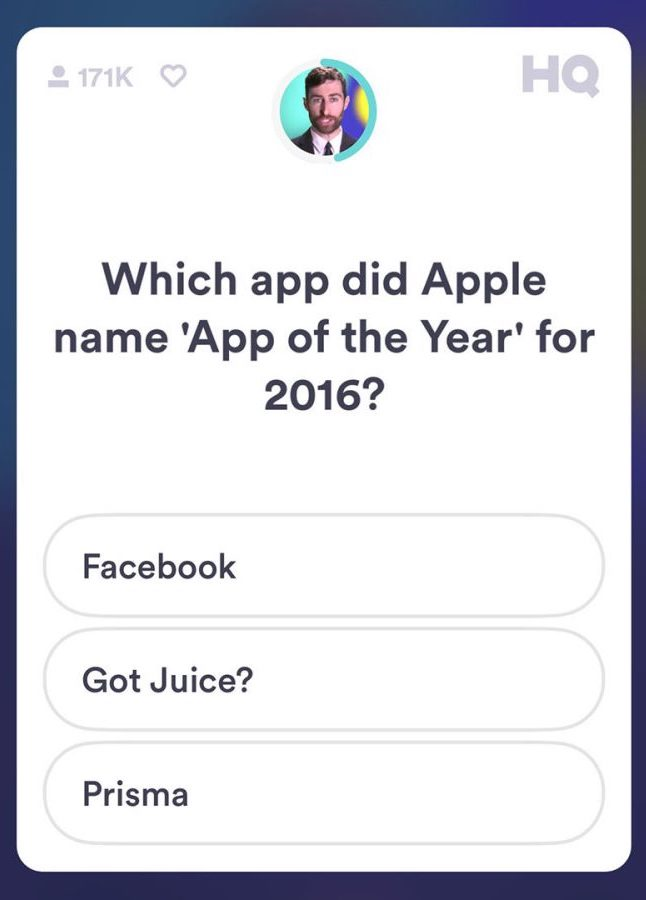

Musix
Skills: React.js, ag-grid, Django Rest Framework (Python), JWT Authentication, MySQL
Musix is an application that allows users to log music concerts and festivals they have attended, as well as give them short reviews. Once concerts are added, the user can sort and filter by their attributes, and modify them again if they wish.
Household GroupMe Bot
Skills: Python, PostgreSQL, GroupMe API, Heroku
Collaborated with: Yuval Timen
This bot is designed to supplement our house's online group chat (on GroupMe), by providing informational messages and access to various commands that support the function and chore distribution of our house.
- Morning report: A small weather report every morning for every location where our group is currently residing
- Trash reminders: Reminders twice a week to take out the trash and recycling
- Rent reminders: Monthly reminder to wire money for rent, along with the amount each person owes
- Shopping list: A shopping list that is maintained through commands sent by users (e.g. /add paper towels, /remove toothpaste). The item is persisted to the database along with the user that added it, and the time.
- Spending tally: A list that records items bought for the common good of the house. The item is persisted to the database along with the user that added it, the cost, and the time. The command "/spending" displays a leaderboard of aggregated money spent towards the household for each person.
- Dishwasher tally: The command "/dishes" records that the user has emptied the dishwasher (peristed to the DB). After persisting to the DB, a leaderboard shows how many times each person has emptied the dishwasher.
Nyte
Skills: React-Native, UI/UX Design, Google Places API, Google Maps API, Adobe XD, Entrepreneurship
Collaborated with: Chris Risley
The Nyte app was meant to give friends more visibility into each others night life activities, as well as help decide which bars or clubs would be the best option on any given night.
Working with the IDEA venture accelerator at Northeastern, we developed a value proposition, conducted market research, distributed surveys to collect information about preferences of potential consumers, built a slide deck to pitch to investors, and started building a basic prototype.
I was in charge of designing and building the mobile application, and its form and function went through several iterations.

Although this project was unfinished and put on hold due to levels of interest declining for some members of our team of 6, and conflicts between which direction the app should go to be most successful, I still gained valuable experience from this project.
HQ Trivia Solver
Skills: Java, Tess4J (OCR Library), Google CustomSearch API, JUnit, JSoup
Collaborated with: Daniel Gao
HQ Trivia is an app that was released in 2017 that allows users to win money by correctly answering trivia questions. The host asks a series of 10 questions (each with 4 options), and if a user gets one wrong they are disqualified. All of those remaining at the end of the 10 questions (having answered each one correctly) is paid out an equal proportion of the prize money. Below is an example of a question that could be asked during a game of HQ Trivia:
Dan and I realized that by simply searching the question in Google, we can usually pretty quickly find out what the correct answer is. Therefore, we decided to build this program to automate this process. The program constantly monitors a folder that is specified by the user for new screenshots. When a screenshot is taken, the program used the Tesseract library to perform Optical Character Recognition (OCR) to convert the question as well as all 4 of the answers into strings that can be used by the program. Then, the question is fed into the Google CustomSearch API, and the program parses the result "snippets" (think the blurb description under each search result when you perform a Google search) for occurrences of each of the answers. It will then display these scores for the user to see, and for the user to ultimately decide which answer to pick and tap it on the device.
Spot-a-Match
Skills: Angular, Spotify API (OAuth), Hackathon collaboration
Collaborated with: Daniel Gao, Megan Larson, Julian Zucker
Ever though it would be interesting to see how "musically compatible" you are with a friend? Now you can. Well, kind of. At Hack Beanpot 2018, some friends and I decided it would be cool to put together a website that does just this. We spent a lot of our development time trying to overcome some issues we had with the Spotify API, and we encountered rate-limiting restrictions that disallowed us from conducting the analysis that we had originally wished to do. As a result, the final project still contained some hard-coded data. Despite these shortcomings, we had a great time hacking this project together, and learned a lot about working with Angular, OAuth and web APIs in the process. We also learned that coding for 48 hours straight surrounded by others doing the same WILL make you sick 🤒.


DotA 2 Counter Picker
Skills: Java, Java Swing, MVC Pattern, JSoup (web scraper)
The game Defense of the Ancients (DotA) 2 features two teams, Radiant and Dire, consisting of 5 heroes each, who fight to destroy the enemy team's base. In the competitive mode of this game, there is a picking phase where each team alternates in both picking their own heroes, and selecting heroes to ban (meaning both teams are unable to pick this hero). Due to the differing abilities of each hero, picking certain heroes to "counter" heroes on the other team can provide a competitive advantage.
The site dotabuff.com provides statistics about all things DotA 2, including statistics about how well heroes counter other heroes. For example, the hero Anti-Mage has a + 5.52% advantage when playing against Zeus. This is because Zeus deals mainly magic damage, and Anti-Mage's skills and abilities provide him with extra protection against magic damage:

This tool allows a player to enter in all of the heroes that have been picked and banned in the game so far, and using a web scraper, calculates aggregated statistics about what heroes to pick (and ban) in order to gain a competitive advantage.